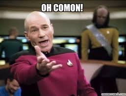
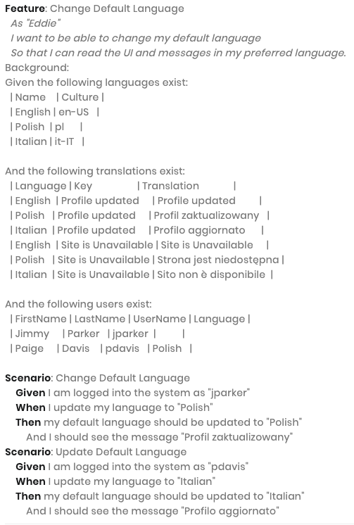
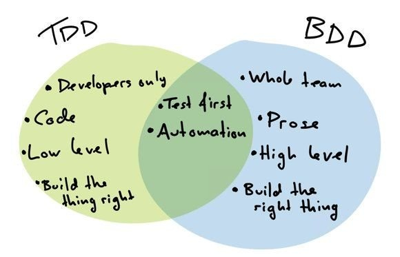
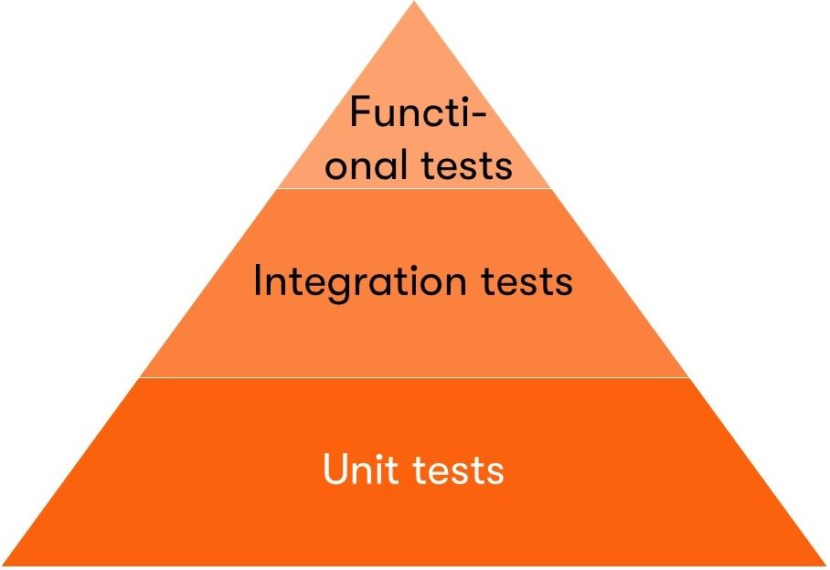

name: inverse layout: true class: center middle inverse # Testing in Front End ( + React) --- --- name: code layout: true class:code --- ## What is Unit Testing ? * A unit test focuses on a single “unit of code” – usually a function in an object or module. * By making the test specific to a single function, the test should be simple, quick to write, and quick to run. * This means you can have many unit tests, and more unit tests means more bugs caught. * They are especially helpful if you need to change your code: When you have a set of unit tests verifying your code works, you can safely change the code and trust that other parts of your program will not break. #### We will come back to unit testing later... --- ## Why testing ? * Maintaining a quality test suite can dramatically enhance developer productivity by catching errors immediately. * Without them, end users encounter more bugs, which can lead to increased reliance on customer service, quality assurance teams, and bug reports. ---  * <strong>Nobody</strong> loves writing unit tests, but the peace of mind they bring can easily be worth the extra work. * This behavior even enforced by TDD process. --- ## So whats TDD ? ### ! In TDD process you have to write your tests before writing code. ##### The TDD process consists of the following steps: * Start by writing a test * Run the test and any other tests. At this point, your newly added test should fail. * Write the minimum amount of code required to make the test pass * Run the tests to check the new test passes * Optionally refactor your code * Repeat from 1 --- ### BDD (Behavior-Driven Development) is another process that is scenario based. * It is written in plain language so easy to understood. * It is also encourages collaboration between engineers, QA and non-technical participants in a software project. * <strong style="color: red">warning!</strong> If interested you can read about it in details online but this is mostly asked in QA interviews.  --- ## TDD vs BDD Summary <br/>  --- ## Is there any other tests than unit test? #### - Short answer: Yes * There are <strong>main</strong> 3 automated tests * 1) Unit tests * 2) Integration tests * 3) Acceptance tests (also called Functional tests) <br/> <br/>  --- ## Integration tests * At some point, your code communicates with a database, file system or another third party. It could even be another module in your app. * That piece of implementation should be tested by integration tests. They typically have a more complicated setup that involves preparing testing environments, initializing dependencies, and so on. * With integration tests (and also for end-to-end tests), we’re testing flows. * It makes sure individual components of your application are able to work together. * Integration tests are more complex than unit testing and requires tooling and setting up different infrastructures. * Ex: API, UI, or side-effects (such as database I/O, logging, etc…) * Example functional testing tools: * Nightwatch, Cypress cypress-react-unit-test etc. --- ## Functional tests * Unit tests and integration tests give you confidence that your app works. * Functional tests look at the app from the user's point of view and test that the system works as expected. * There are many types of functional tests: smoke test, black box etc. * Example functional testing tools: * Selenium, Soap UI, JUnit, QTP etc. --- ## Finally back to unit testing * Why? Because as a developer you probably will be conserned with unit testing in development. * In staging and in production full suite or smoke tests are run which usually developed by QA engineers. * That being said Integration and Functional tests are out of scope of this class. --- ## From now on... * We will learn how to do basic unit testing * Also dive into testing react components (we can try 1-2 examples from our app) * As a tool <strong>Jest</strong> was chosen. It is a preferred framework for the React based applications as it requires zero configuration. * For shallow testing react components we will use <strong>enzyme</strong> --- ## Jest most basic example: ```javascript const sum = require('./sum'); test('adds 1 + 2 to equal 3', () => { expect(sum(1, 2)).toBe(3); }); ``` --- ## Jest: Matchers * Jest uses "matchers" to let you test values in different ways Ex: ```javascript .not .toBe() .toBeDefined() .toBeFalsy() .toBeNaN() etc.. ``` --- ## Jest: Testing Asynchronous Code * Jest needs to know when the code it is testing has completed, before it can move on to another test * Jest has several ways to handle this * Callbacks * Promises * Async/await Ex with promises ```javascript test('the data is peanut butter', () => { return fetchData().then(data => { expect(data).toBe('peanut butter'); }); }); ``` --- ## Jest: Setup and Teardown * Often while writing tests you have some setup work that needs to happen before tests run, and you have some finishing work that needs to happen after tests run. * Jest provides helper functions to handle this. ```javascript beforeEach() - before each test afterEach() - after each test beforeAll() - at the beginning of all tests afterAll() - at the end of all tests describe() - used to create block, the before and after blocks only apply to the tests within that describe block. ``` --- ## Jest: Mocking functions * In testing, mocking allows you to test functionality that depends on: * Database, * Network requests, * access to Files * Or any External system --- ## Jest: Test Coverage * In Jest: * simply add -- --coverage flag (ex: npm test -- --coverage ) * Note that tests run much slower with coverage so it is recommended to run it separately from your normal workflow --- ## React Component Testing: enzyme + jest * Jest can be used with any other Javascript app but Enzyme only works with React. Jest can be used without Enzyme, Enzyme simply adds additional functionality. #### Disclaimer: Testing component functions is an AntiPattern * We won't be testing component functions because * Its more important to test behavior of component (I/O) rather than its each function * Testing each function will lead component being less flexible * Ex: simple renaming state name or function name will lead to test fail. In reality component is working as expected --- ## Enzyme * We can manipulate, traverse, and in some ways simulate runtime given the React Components output * It has 2 main rendering options: 1) shallow and 2) mount 3) **bonus** static render Ex: ```javascript describe('<MyComponent />', () => { it('renders three <Foo /> components', () => { const wrapper = shallow(<MyComponent />); expect(wrapper.find(Foo)).to.have.lengthOf(3); }); ``` * API of enzyme is large. * So we will focus on some of them in our examples --- ## Alternatives * Enzyme alternatives * react-testing-library ( https://github.com/testing-library/react-testing-library ) * react-test-renderer ( https://www.npmjs.com/package/react-test-renderer ), * Jest alternatives: * Mocha, * Jasmine, * Cypress, * Karma etc. --- # References - https://reactjs.org/docs/testing-environments.html - https://www.freecodecamp.org/news/how-to-start-unit-testing-javascript/ - https://create-react-app.dev/docs/running-tests/ - https://jestjs.io/docs/en/more-resources